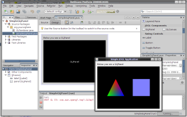
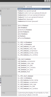
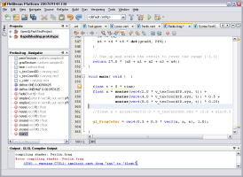
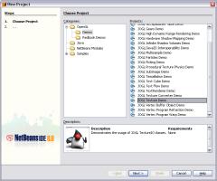

<!--
    Document   : ScreenshotsSnippet
    Created on : 11.10.2008, 17:18:57
    Author     : Michael Bien
-->
<p>
    <a href="./../../resources/JOGL_FormDesigner_Integration2.png">
        
    </a>
    <a href="./../../resources/OpenGL_QuickSearch.png">
        
    </a>
    <a href="./../../resources/compilerErrorAnnotations.PNG">
        
    </a>
    <a href="./../../resources/demoProjects.PNG">
        
    </a>
</p>
<p>
    More screenshots can be found on the
    <a href="https://netbeans-opengl-pack.dev.java.net/servlets/ProjectProcess?tab=1" onclick="pageTracker._trackPageview('/link/NewAndNoteWorthy'); ">New and Noteworthy</a>
    page.
</p>
